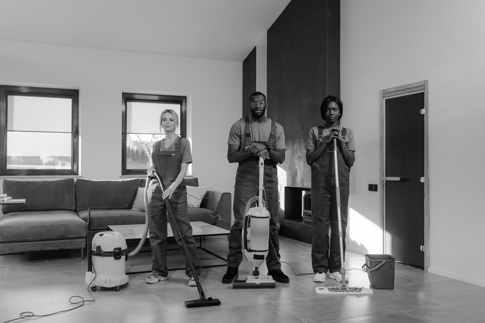

About QuickFix Connect

QuickFix Connect is a modern online platform designed to connect people with reliable and skilled service providers in their local area. The platform makes it easier for customers to find help for home repairs, cleaning, maintenance and other everyday services.
Our main goal is to save customers time, reduce stress and provide access to trusted professionals in one convenient place.
Our Mission
Our mission is to provide a fast, reliable and user-friendly platform that connects people with trusted service providers. We aim to simplify everyday life by making it easier to find help when it is needed most.
Our Vision
Our vision is to become a trusted platform for local services, known for convenience, reliability and customer satisfaction. We also want to create opportunities for skilled service providers to reach more customers.
Our Values
- Trustworthy service providers
- Fast and simple service requests
- Affordable and reliable support
- Customer-focused communication
What We Do
At QuickFix Connect, we bring different services together in one place. Whether a customer needs plumbing, cleaning, appliance repairs, home maintenance or garden services, our platform helps them find the right person for the job.